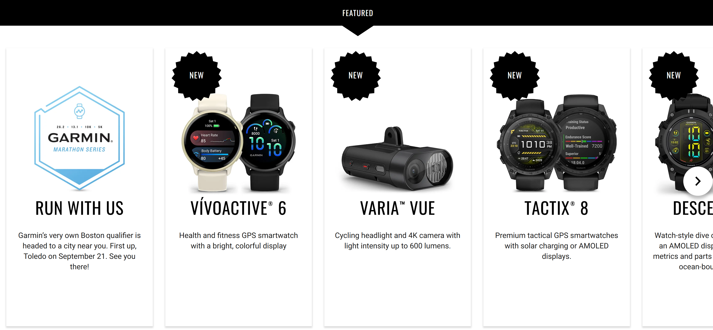
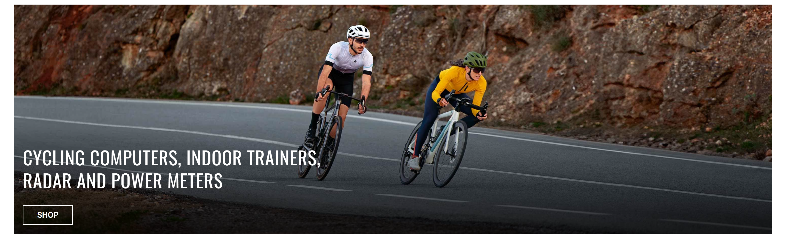
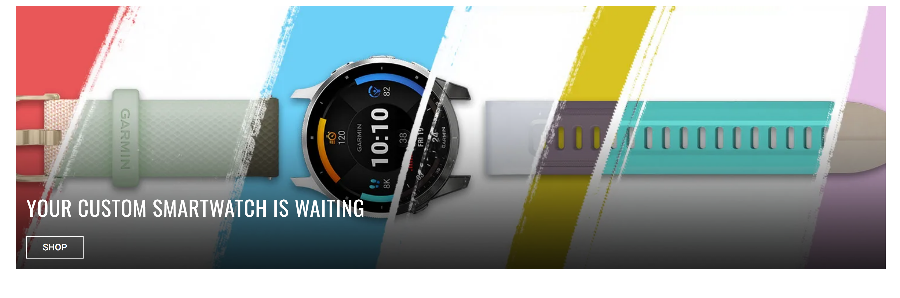

Introducing our most advanced navigation pathfinding technology yet. Navigate terrain with 1000x more focus and efficiency, whether you're hiking, jogging, or exploring the unknown.



SIGN UP FOR NEWS
Get product news and promotions based on your preferences and registered devices. Learn about email privacy.